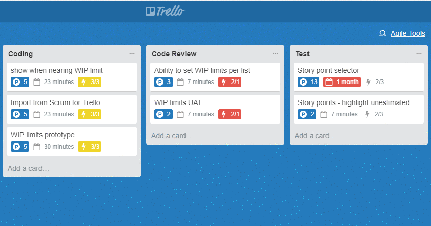

Trello has allowed me to plan my tasks by compartmentalising them into visual stickers. They’re put in to columns on a to do list for, to do, doing, review and done sections.
GitHub is an online programme that allows users to upload source codes from packages like Javascript, store them and allow multiple users to view and update the versions without clashing as they’re versions of the code are also recorded. This is a type of “version control”(13)
Like a word document that can be uploaded, for example a poem, you and others can view the original text then add and amend lines for comparison.
This is done for multiple files and folders as would be expected for building a website or application.
In my GitHub page (https://github.com/tabdenver/javascriptproject) I have uploaded the JavaScript codes that I have been working on at Codenation that’s pulled from the saved folder on the laptops file directory. As the GitHub profile is made public, others in the class have uploaded their codes for the same project so we can view them.
Git on the other hand is used on a local computer network for local computer to computer access to share codes with another. However, GitHub is online and therefore more accessible and allows for multiple users who have internet access from anywhere.
If I put in my Trello account that I am working on a code in the To do list upload it on GitHub for others to look at and add or amend, we can see if they have a better solution to a code, I can then amend it, add that to the Doing column, go over it once I have tested it and uploaded this latest version and once I am happy with this put this in the Done column in Trello.
References
(13) https://www.youtube.com/watch?v=uUuTYDg9Xo

Copywright ©2019 Tabraiz Khan